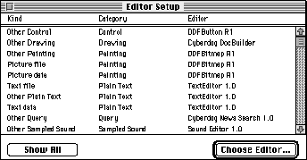
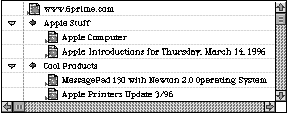
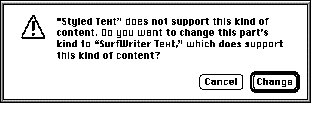

If you're ready to create your first full-featured OpenDoc part
editor but have some questions about part kinds and how to work
with them, you'll find the answers here. We explain how your
choice of part kinds will affect whether users will be able to read
your content with different part editors and even across different
platforms. We also discuss some human interface principles and
describe how to handle the most common user actions having to do
with part kinds.
We imagine that every computer user on earth has had the experience of trying to open
a document created by someone else but not being able to because the application it was
created with is missing. In the context of OpenDoc, users can run into this when the
part editor that created a part is missing. OpenDoc provides several ways to mitigate
this "missing editor" problem. One way is for developers to create and freely
distribute part viewers for all the kinds of parts that they support; a part viewer is a
subset of its corresponding editor's code that displays and prints a part's contents but
can't be used to create or edit a part.
But suppose a user doesn't have either an editor or a viewer for a particular part.
That's where part kinds come in. A part kind is a data format in which a part's
intrinsic content is stored, analogous to a file type in a traditional application.
OpenDoc allows a part editor to support multiple part kinds -- that is, to store the
same content in multiple data formats -- to increase the probability that a user will
be able to see and copy the contents of a part. A user who doesn't have the same part
editor that created a part may have a different part editor that can read at least one of
the data formats in which that part is stored. Alternatively, one or more of the data
formats can perhaps be translated into a part kind for which the user has an editor or
viewer.
What this means to you is that your choice of part kinds to support is a crucial step in
developing a part editor. This article discusses how to choose which part kinds to
support -- standard (to Macintosh or across platforms) or proprietary -- and
whether to support one or multiple part kinds. We also discuss how to decide which
category your part kinds fit into, some human interface principles having to do with
part kinds, and what to do in a few key situations in which user actions cause your
editor to have to deal with part kinds.
If you're not already familiar with the OpenDoc human interface, you should first read
"The OpenDoc User Experience" in develop Issue 22 to get up to speed. This article also
requires you to know something about OpenDoc storage and how to use the
ODStorageUnit class. "Getting Started With OpenDoc Storage" in develop Issue 24 is a
good introduction; further details can be found in the OpenDoc Programmer's Guide for
the Mac OS and its accompanying OpenDoc Class Reference CD.
In developing your part editor, you first need to decide which part kind or kinds to
support. This choice is worthy of careful consideration. The decision you make about
whether to support standard vs. proprietary part kinds and how many part kinds to
support will affect the number of users able to read your content across documents and
platforms. We'll look at the tradeoffs here. We'll also give you the information you
need in order to decide which category or categories your part kinds fit into.
STANDARD VS. PROPRIETARY PART KINDS
First, you need to decide whether to support standard or proprietary part kinds, or
some combination of each. Standard part kinds are those data formats that, either
through an official decree or by some de facto means, have become widely used and
accepted. There are industry-standard part kinds, which are standard across more
than one platform, and standard Macintosh part kinds.
Because new data formats are being created all the time, we can't give you a complete
list, but here's a sample:
Part kinds are usually specified as ISO strings (null-terminated ASCII strings using
7-bit characters) for manipulation by OpenDoc. As you can see from our list, standard
Macintosh part kinds are actually today's standard Macintosh file types, except that
instead of being file-type signatures they're ISO strings, which can be derived by
using methods of the class ODTranslation. (See the Data Interchange recipes on the
OpenDoc Class Reference CD for more details on how to properly support a standard
Macintosh part kind based on a standard Macintosh file type.) Your part editor needs to
provide user-readable names for part kinds in a name-mapping resource; more on
this later.
The ASCII standard is actually pretty loosely defined. It doesn't specify
whether you should use 7- or 8-bit encoding, nor does it say whether you
should use LF, CR, or CRLF for line separators. In the near future, Unicode,
which OpenDoc uses internally, is likely to become the standard. In the
meantime, your part may need to be prepared to handle several variants on the
ASCII standard without failure.
If the part kind you choose to support is an industry standard, users will benefit
because they'll be more likely to avoid the missing editor problem mentioned earlier.
Furthermore, supporting standard part kinds enables your part editor to support
more of the content that's already out there. Let's face it -- data formats don't live
forever, but the standard ones have a much better chance of being long-lived than any
proprietary kinds you create.
On the other hand, if there's no standard for the content your part editor creates, or if
the standard won't suffice to capture the functionality your part editor offers, you'll
need to create a proprietary part kind. You must weigh the advantages of using a
proprietary part kind against the disadvantage of users possibly not being able to read
your part's content.
In any case, don't redefine an existing standard. For example, the TEXT part kind
should be used only for plain text, not for some data format that uses text as part of its
definition, such as PostScript, HTML, or BinHex. These data formats should be part
kinds in their own right. Otherwise, there will be confusion when OpenDoc needs to
find a substitute part editor for a part that claims to be TEXT but is in fact another
kind such as HTML. The user won't be happy with the result.
If you decide to use an industry-standard part kind, the Bento container suite (part of
the storage system in OpenDoc 1.0) can help you solve internal byte-ordering
problems and ensure that a document written on any OpenDoc platform can be read and
written on any other OpenDoc platform. However, your part editor is responsible for
proper byte ordering of the values in the content property of your storage unit. (Data
formats typically specify byte ordering, so OpenDoc stays out of your way here.) The
Standard Type I/O utilities (see the file StdTypIO.h and the functions declared there)
solve the byte-ordering problem for a variety of simple data formats. These utilities
can be used in combination to build up more complex data formats.
SUPPORTING MULTIPLE PART KINDS
As we've said, your editor can support one or more part kinds. If it supports more than
one part kind, one of these will be the preferred kind. Users implicitly indicate the
preferred kind when they choose a stationery pad or cut and paste content. They can
also change the preferred kind in the Part Info dialog if they desire; more on this later.
Supporting multiple part kinds increases the probability that other users can see the
contents of a part created with your editor, even if they don't have your part editor
(see "Editor Substitution Explained" for why this is so). Your choice of part kinds to
support comes into play both when the user saves a document with parts created by
your editor and when the user transfers data with a paste or drop operation.
______________________________
EDITOR SUBSTITUTION EXPLAINED
When a user tries to open a document or edit a part and the editor that created
it is missing, OpenDoc searches for a substitute. This occurs as part of
OpenDoc's binding process -- the process of assigning the correct part editor
to a given part. When a document is opened, the OpenDoc binding subsystem
binds editors to all parts that need to be displayed. During execution, OpenDoc
binds editors to part data when a part is read in or when its editor is
explicitly changed.
Let's look at a simplified example of editor substitution. Suppose we've created
a text editor named SurfWriter that stores its content in three formats: a
proprietary part kind (SurfWriter Text) and two standard part kinds (RTF
and TEXT). And suppose that SurfWriter Text is the preferred kind. When
OpenDoc tries to display the part, its binding subsystem looks first for
SurfWriter -- the last editor that was used. If that isn't found, the binding
subsystem looks for an editor that can read SurfWriter Text -- the preferred
kind. If that can't be found, it looks for one that can read RTF or TEXT. Thus,
storing multiple part kinds increases the probability that users will be able
to read your content with different part editors and across different platforms.
Now let's look at editor substitution in a little more detail. When attempting to
find an editor to bind to a part, OpenDoc looks first for the editor that last
edited the part, specified in the kODPropPreferredEditor property in the
part's storage unit. If this editor isn't present on the user's system, the
binding subsystem examines each of the part kinds in the stored part and the
list of kinds supported by the editor or editors installed on the user's system,
looking for a match. For each supported kind, there's a default editor. The user
can inspect and modify the list of default editors in the Editor Setup control
panel (Figure 1).

Figure 1. The Editor Setup control panel
During the matching process, the binding subsystem looks first for the default
editor for the preferred kind. If this editor isn't present, it looks for the
default editor for the preferred kind's category, and finally for any editor that
can read the preferred kind. If such an editor can't be found, the binding
subsystem repeats the whole process for each of the remaining part kinds in
the part, from highest fidelity to lowest.
______________________________
If no editor for any of the part kinds is installed on the user's machine, the part
remains unviewable and uneditable. But OpenDoc still binds an editor to the part --
the "editor of last resort." This editor is always available and represents the part as an
icon within the document, so that there's never a blank spot in the document where a
part can't be displayed. The user can examine the part's kind in the Part Info dialog,
which gives a clue as to which editor or viewer should be installed, although if there's
no editor for the part, there's probably no user string for the preferred kind. The user
can also decide to translate the part to another part kind.
When deciding how many part kinds to support when your editor is saving its parts of
a document, you'll want to consider the tradeoff between portability and the space
required to store your part as multiple kinds. The most transportable part kind (that
is, the standard one) may not be the most compact or the one that will represent the
underlying contents with the greatest fidelity. Typically, you'll want to store only the
one preferred part kind, or the preferred kind and one standard part kind. If there
isn't a standard kind that's roughly equivalent to your preferred kind, consider also
storing a TEXT or PICT representation, simply to maximize the chances that the user
will be able to see something for your part. For example, if your part's preferred kind
is 3DMF, there isn't an equivalent standard kind, so you should also store a PICT
representation. You might want to present the user with a Settings or Preferences
dialog giving a choice of part kinds to store in addition to the preferred kind. See pages
476 and 479 of the OpenDoc Programmer's Guide for implementation details.
When your editor is providing data for a data transfer operation (such as a copy to the
Clipboard), you may want to write out a greater number of standard part kinds than
during a save operation. This is because during data transfer it's more likely that the
user is trying to move content to a different editor or application. Providing standard
part kinds in this situation is therefore even more important. On the other hand,
remember that the user can use the Paste As command to get more options, including
translation, so you needn't go overboard in supporting lots of kinds.
CATEGORY CONSIDERATIONS
After you've chosen the part kinds to support, you need to determine which category or
categories these belong to. A part category is a set of part kinds that are conceptually
similar. You might think of it as a generic term for several "brand name" variants.
For example, the kODCategoryStyledText category might include the part kinds
SurfWriter Text 3.0, SurfWriter Text 2.0, and others.
OpenDoc looks at a part's category to decide which part editors or part viewers can be
substituted if an editor is missing and whether to merge or embed data when content is
copied from one part into another. Categories are specified by your editor in a
name-mapping resource and can't be changed by the user.
Categories for existing part kinds have already been determined and should be adhered
to; this set of categories is broad enough to include most new part kinds as well. A list
of the predefined categories is given in Table 1. This list can be found in the OpenDoc
Programmer's Guide on pages 477-478, but note that a new category has been added
since the publication of the book: kODCategoryArchive.
Table 1. Predefined part categories
| Part category | Explanation |
| kODCategoryPlainText | Plain ASCII text |
| kODCategoryStyledText | Styled text |
| kODCategoryDrawing | Object-based graphics |
| kODCategory3DGraphic | 3D object-based graphics |
| kODCategoryPainting | Pixel-based graphics |
| kODCategoryMovie | Movies or animations |
| kODCategorySampledSound | Simple sampled sounds |
| kODCategoryStructuredSound | Sampled sounds with additional information |
| kODCategoryChart | Chart data |
| kODCategoryFormula | Formula or equation data |
| kODCategorySpreadsheet | Spreadsheet data |
| kODCategoryTable | Tabular data |
| kODCategoryDatabase | Database information |
| kODCategoryQuery | Stored database queries |
| kODCategoryConnection | Network-connection information |
| kODCategoryScript | User scripts |
| kODCategoryOutline | Outlines created by an outliner program |
| kODCategoryPageLayout | Page layouts |
| kODCategoryPresentation | Slide shows or other presentations |
| kODCategoryCalendar | Calendar data |
| kODCategoryForm | Forms created by a forms generator |
| kODCategoryExecutable | Stored executable code |
| kODCategoryCompressed | Compressed data |
| kODCategoryControlPanel | Data stored by a control panel |
| kODCategoryControl | Data stored by a control, such as a button |
| kODCategoryPersonalInfo | Data stored by a personal information manager |
| kODCategorySpace | Stored server, disk, or subdirectory data |
| kODCategoryProject | Project-management data |
| kODCategorySignature | Digital signatures |
| kODCategoryKey | Passwords or keys |
| kODCategoryUtility | Data stored by a utility function |
| kODCategoryMailingLabel | Mailing labels |
| kODCategoryLocator | Locators or addresses, such as URLs |
| kODCategoryPrinter | Stored printer data |
| kODCategoryTime | Stored clock data |
| kODCategoryArchive | Archive or partial archive data such as TAR |
The majority of the entries in the list (such as kODCategoryPlainText and
kODCategoryStyledText) are self-explanatory, but a few need some clarification.

Figure 2. Example of an outline from the Cyberdog Notebook
Some of the categories seem as though they could be subsets of other categories -- for
instance, kODCategoryPlainText could be a subset of kODCategoryStyledText, and
kODCategory3DGraphic could be a subset of kODCategoryDrawing. But categories aren't
hierarchical -- that is, one category can't include others.
When you're considering which category or categories your part kinds should belong
to, ask yourself the following question for each of the categories: If users pasted my
kind of data into a part belonging to this category, would they expect the content to be
merged, or embedded as a separate part? If they would expect the content to be merged,
that's a category your part kind should belong to. (Note that whether a part kind
supports embedding doesn't affect which category it's in.)
For example, if users pasted a slide (a part belonging to the kODCategoryPresentation
category) into some text (a part belonging to the kODCategoryStyledText category),
they would expect the slide to be embedded within the text because the operations on
slides and text are very different. But if they pasted one slide into another slide, they
would expect the contents of the first slide to be merged into the destination slide;
thus, the two parts should belong to the same category.
Consider another example. If users pasted a picture from a Web page into a part
belonging to the category kODCategoryPainting, they would probably expect it to be
merged. But if they pasted the picture into a part belonging to the category
kODCategoryDrawing or kODCategory3DGraphic, they would probably expect it to be
embedded, because the operations available in a painting part are usually very
different from those in a drawing part. Thus, the picture should belong to the category
kODCategoryPainting.
You need to choose one or more categories for each of the part kinds that your part
editor supports. A part kind can be in multiple categories; for example, a part that can
shift its view from table to chart should have a preferred kind that's a member of both
categories. The same category can be specified for a part kind that represents a single
object and a part kind that represents a collection of those objects; for example, you
can specify kODCategoryDatabase for a part kind that represents a single database
record and for a part kind that represents a collection of such records.
As mentioned earlier, when your part editor provides content to the Clipboard or a
drag and drop object, you may want to write out a greater number of standard part
kinds than during a save operation, to increase the probability of being able to
interchange data with other parts. In fact, it will help if you support kinds in more
than one category. Here's an example: Suppose a user copies some spreadsheet cells and
pastes them into a chart. Because the operations on cells and charts are different, the
user will expect the spreadsheet cells to be embedded. However, if the spreadsheet
provides its copied data in a format that the chart is prepared to merge, the user gets a
higher level of interoperability. If the spreadsheet and the chart both support kinds
that are in the kODCategoryPlainText category, for instance, the chart can take the
content of the spreadsheet and chart it instead of embedding the spreadsheet.
Here are some more examples of part kinds and the categories they fit into:
If your part kinds don't appear to fit in any of the predefined categories, you can
request a new category. The list of predefined categories is maintained by CI Labs, a
consortium that coordinates cross-platform OpenDoc development. See the CI Labs Web
pagehttp://www.cilabs.org/categories for instructions on how to request a new
category.
RESOURCES REQUIRED
Both part kinds and part categories are assigned in your part editor's name-mapping
('nmap') resources. You can learn how to construct these resources by looking at the
Dynamic Binding recipes on the OpenDoc Class Reference CD. These resources are
required:
If you request a new category and CI Labs approves your request, you'll also need
aCategoryUserString resource listing your category user strings. OpenDoc already
contains user strings for predefined categories.
Listing 1 shows an EditorPlatformKind resource indicating that your editor supports
TEXT files and TEXT scrap data. Listing 2 demonstrates how a part editor would declare
two part kinds that are in the same category in a KindCategories resource.
______________________________
Listing 1. An example EditorPlatformKind resource
resource kODNameMappings (kPlatformEditorKindMapId)
{
kODEditorPlatformKind,
{ /* array KeyList: 1 element */
/* [1] */
kYourEditorID,
kODIsPltfmTypeSpac
{ /* array PltfmTypeSpacList: 2 elements */
{
/* [1] */
kODPlatformFileType,
'TEXT',
smRoman,
langEnglish,
"Plain Text",
kODCategoryPlainText,
/* [2] */
kODPlatformDataType,
'TEXT',
smRoman,
langEnglish,
"Plain Text",
kODCategoryPlainText,
}
}
}
};
______________________________
Listing 2. An example KindCategories resource
resource kODNameMappings (kKindCategoryMapId)
{
kODKind,
{ /* array kinds: 2 elements */
/* [1] */
kStyledTextKind1,
kODIsAnISOStringList
{
{ /* array categories: 1 element */
/* [1] */
kODCategoryStyledText
}
},
/* [2] */
kStyledTextKind2,
kODIsAnISOStringList
{
{ /* array categories: 1 element */
/* [1] */
kODCategoryStyledText
}
}
}
};
______________________________
At run time, if you need to convert a Mac OS file type such as 'TEXT' to an ISO type,
first get the translation object from the session:
ODTranslation* translation = session->GetTranslation(ev);
Then call the translation object to convert the Mac OS file type, or what we call the
platform kind (a platform-neutral term), to an ISO type:
ODValueType valueType =
translation->GetISOTypeFromPlatformType
('TEXT', kODPlatformFileType);
You'll find kODPlatformFileType defined in StdDefs.xh, ODTranslation defined in
Translt.xh, and ODSession defined in ODSessn.xh. Use kODPlatformDataType instead of
kODPlatformFileType if you're converting a scrap type from the Clipboard as opposed
to a file type from the file system.
There are some important human interface principles regarding part kinds that you
should incorporate in the design of your part editor. They boil down to maintaining the
fidelity of parts as they pass through various operations. One key principle of the user
model is that editors shouldn't change the part kind of content without warning,
because the translation may cause information to be lost. Only the user should be able
to change the preferred kind of a part, and then only through an explicit action. This
supports the concept that content copied into or out of an OpenDoc document should
retain its fidelity. For example, when the user drags a drawing document from the
desktop into an OpenDoc document and then back to the desktop, the initial document
and the final document should be identical, as far as the user is concerned. The final
document should have the same part kind as the original document, unless the user
elects to change the part kind. (See the recipe for promising a non-OpenDoc file on the
OpenDoc Class Reference CD for more details.)
Users can change the preferred kind of a part with the Part Info (or Document Info)
command in the Edit menu. This command brings up a dialog like the one shown in
Figure 3. A pop-up menu offers a list of part kinds supported by the current editor,
plus the possibility of translating to a different format with the "Translate to"
command.
Figure 3. The Part Info dialog
When the user wants to save a document, your editor should write it out in the format
of the preferred kind. The highest-fidelity kind that your editor writes should be the
preferred kind. Don't change the preferred kind, because that would be implicit
translation, or translating formats behind the user's back -- not a good idea, although
some applications behave this way today. Perhaps you've seen this: the application
claims to read or write a particular data format, but when a document of that file type
is opened with that application and then saved, the application converts the document to
its own proprietary format. Users are left wondering why their documents can't stick
with the format they were created with.
To maximize interchange between OpenDoc, traditional applications, and system
software, OpenDoc does not arbitrarily promote platform kinds (which, remember, is
our platform-neutral term for Mac OS file types) to OpenDoc part kinds.*
In today's applications, this unexpected format change is also often associated with the
creation of a new document named "Untitled x" or "FooDocument - converted." In
OpenDoc, parts don't have control over the name of the document, so this errant
behavior is prevented. The name of the document, just like the preferred kind of a
part, should be considered a user setting. Editors shouldn't tamper with user settings.
There are situations where it's appropriate for the editor to query the user about
changing a part kind. If the user tries some operation, or tries to add some content,
that's not supported in the current kind but is supported in another kind that the
editor understands, it's appropriate to suggest changing to the kind with more
functionality.
As an example of the first situation, suppose the user is editing a plain-text document
with an editor that supports styled text. If the user selects some text and tries to
change it to bold, the part editor must allow this change but should warn the user that
the operation will require a change in the part kind -- and the user must be allowed to
veto this operation before it's done. In this situation the part editor should display an
alert like the one shown in Figure 4.
Figure 4. Warning the user that an operation requires the part kind to be changed
As an example of the second situation, suppose the user now pastes some text that
includes a page break and an indentation, which isn't supported in styled text but is
supported in a proprietary format the part editor uses. The part editor should allow
this change but present an alert (see Figure 5) and let the user veto the change.

Figure 5. Warning the user that adding content requires the part kind to be changed
A number of user actions require your editor to deal with part kinds and categories,
though in most cases this interaction is transparent to the user. For example, when a
user pastes content into a part, the editor of the part where the content is about to be
pasted examines the part kinds and categories of the content being pasted. The editor
decides which, if any, of the multiple part kinds available will be pasted. In this case,
as in many others, the user doesn't realize what's going on behind the scenes with part
kinds and categories.
We'll discuss in detail what your editor should do with part kinds and categories in
response to each of the following user actions:
CREATING A DOCUMENT
To create a document, the user double-clicks on a stationery pad that you supply with
your part editor. You must provide at least one stationery pad for each part category
that your editor supports. For example, if your editor supports the "styled text"
category and the SurfWriter Text, AcmeWriter Text, and RTF part kinds, you must
supply (and your product's installer must install on the user's system) a stationery
pad for at least one of these part kinds. Typically, you'll install a stationery pad for the
highest-fidelity part kind that you support.
You can optionally provide more than one stationery pad. When users decide to
double-click on one stationery pad instead of another, they've made an explicit decision
about the preferred kind of the document they want to be created.
Rules and conventions for installing part editors and stationery pads can be found in
the OpenDoc Programmer's Guide, Appendix C, "Installing OpenDoc Software and
Parts."
OPENING A DOCUMENT
Whenever a user opens a document containing one of your parts, your part must be
reconstituted from external storage by your InitPartFromStorage method, described in
detail in the article "Getting Started With OpenDoc Storage" in develop Issue 24. Your
editor needs to find out the preferred kind and read in the content data accordingly.
If your editor supports any platform kinds (Mac OS file types), you should first check
for the HFSFlavor value type in the content property (kODPropContents) of the part's
storage unit. If it's there, you've been bound to an empty storage unit that's pointing to
a file that you should use to internalize from. This binding can happen in one of two
ways: the user may have dragged and dropped a traditional Macintosh file onto an
OpenDoc document and your part editor was bound to the drop, or the user may have
opened a traditional Macintosh file with the OpenDoc launcher application. For detailed
information on how to make this work, see the Drag and Drop Recipes on the OpenDoc
Class Reference CD, specifically the section "Incorporating Data From a Non-OpenDoc
Document." Also, see the section "Accepting Non-OpenDoc Data" on page 371 of the
OpenDoc Programmer's Guide.
If your editor doesn't support any platform kinds, follow these steps:
#include <StdTypIO.h>
#include <TempObj.h>
...
// The following code belongs in your InitPartFromStorage method.
ODStorageUnit* su = self->GetStorageUnit(ev);
TempISOStr preferredKind = ODGetISOStrProp(ev, su,
kODPropPreferredKind, kODISOStr, kODNULL);
if (preferredKind == kODNULL) {
su->Focus(ev, kODPropContents, kODPosUndefined, kODNULL, 1,
kODPosUndefined);
preferredKind = su->GetType(ev);
}
self->GetStorageUnit(ev)->Focus(ev, kODPropContents, kODPosUndefined, preferredKind, 0, kODPosUndefined);
Note that it's possible for your editor to be bound to a part that previously had a
different editor, as described earlier in "Editor Substitution Explained." In this case,
the OpenDoc binding subsystem will automatically notify the user. If your editor
doesn't support the preferred kind, use the highest-fidelity kind in the content
property that your editor does support as the de facto preferred kind. Do not update the
preferred kind property until Externalize or ChangeKind is called on your part.
SAVING A DOCUMENT
Whenever a user saves the document, your part must be written out to the storage
unit, or externalized, by your Externalize method, described in detail in the article
"Getting Started With OpenDoc Storage" in develop Issue 24. Your editor should write
out the preferred kind, at a minimum; you may also decide to write out one or more
alternate part kinds, as discussed earlier under "Supporting Multiple Part Kinds."
The first two steps that are required have to do with preparing the storage unit for
clean externalization from your part editor, also known as "prepping the storage
unit." You should only have to do this the first time Externalize is called on your part.
Your Externalize method may be called at times other than when the user saves a
document. For example, depending on the Save model of the current document and the
idle-time optimizations that may or may not be present, your part may be told to
externalize only when the user saves a document or as often as every minute.
Therefore, your editor shouldn't have preconceived notions about why it's asked to
write out your part. As an optimization, your editor should keep an fDirty flag that's
set whenever the user changes the part's content and cleared whenever externalization
is completed. If your fDirty flag is clear, your Externalize method should be a no-op.
TRANSFERRING DATA
Whenever the user transfers data with Cut, Copy, Paste, Paste As, or drag and drop,
your CloneInto method is called. See the section "The CloneInto Method of Your Part
Editor" on pages 327-329 of the OpenDoc Programmer's Guide for the precise details
of implementing the CloneInto method.
For the purposes of multiple part kind support, however, your editor should do the
following:
If your part editor is a container, it's important for it to treat pasted content
appropriately. When your container receives a Paste command or is the destination of
a drag and drop, it should check the preferred kind of the incoming content to decide
whether to merge or embed that content. If the category of the preferred kind of the
incoming content is the same as the category of your content's kind, merge the
incoming content; otherwise, embed the incoming content into a new part.
As mentioned earlier, it's possible for kinds to belong to more than one category. If the
incoming content's kind or your content's kind belongs to multiple categories, or if
both do, as long as they share at least one category they can be said to be of the same
category. If the incoming content isn't an OpenDoc part, simply use the data type that's
closest to your own content kind as the de facto preferred kind for the incoming
content.
If the user drops a part onto your part that you determine should be merged, and you
find there's no content when you try to merge it, the operation will appear to be a
no-op, which is very confusing to the user. You may want to actually embed an empty
part in this case rather than merging nothing, so that the user at least receives some
feedback.
You also should be aware of a concern about format fidelity that arises if the user
attempts a paste or drop operation with your editor that involves content with other
content embedded. Some data or formatting may be lost if one or more of the part kinds
supported by your part editor is of lesser fidelity and can't handle embedded content,
and at the time of the paste or drop the destination part editor can work only with the
lower-fidelity kind. In this case, the destination part editor can't know that it's losing
the embedded content.
What can you do to minimize these cases, or at least make them easier on the user? We
strongly recommend that your part editor support embedding. If it doesn't, it shouldn't
claim to support a kind that includes embedding. For example, the part editor that's the
destination for a paste or drop shouldn't strip embedded content or links out of the data
format. If your editor can't preserve the fidelity of the paste or drop, it must choose a
lower-fidelity part kind; if there are no other kinds present that your editor
supports, it shouldn't allow the paste or accept the drop. The only exception to this is
when a plain-text editor receives a paste of styled text; in this case, it can use only the
text and ignore the style information. Because text is so ubiquitous, it's handled
differently from other kinds of content.
If your part editor supports embedding, it should allow the user to embed any
content that can't be merged; it shouldn't restrict the kinds that can be
embedded.
Remember that if your part editor supports data interchange, it must completely
support Undo, so that if data or formatting is lost in a transfer operation, the user can
undo and recover what was lost. Although most of today's applications don't alert the
user when data or formatting is lost, users seem to recognize with ease when they've
experienced such a loss and need to choose Undo to recover. With the multiple-level
Undo support in OpenDoc, recovering from a loss of data or formatting is much easier.
CHANGING THE PREFERRED KIND
Whenever the user changes the preferred kind of a part, your ChangeKind method is
called. This is usually done from the Part Info (or Document Info) dialog shown
earlier, but you shouldn't assume that that will be the only user interface that can
cause this method to be called. Your editor should do the following:
#include <StdTypIO.h> #include <TempObj.h> ... // The following code belongs in your ChangeKind method; the kind // that the user selected is passed in the changeKind parameter. ODStorageUnit* su = self->GetStorageUnit(ev); ODSetISOStrProp(ev, su, kODPropPreferredKind, kODISOStr, changeKind);
TRANSLATING OR CONVERTING A PART
The user can force translation of a part with the Part Info (or Document Info)
command in the Edit menu, which brings up a dialog like the one shown earlier in
Figure 3. The part kind pop-up menu in the dialog, in addition to listing part kinds
supported by the current editor, offers the possibility of choosing "Translate to" and
then choosing a part kind from the Translate To dialog. The part kind pop-up menu
shown in Figure 6 illustrates a number of different ways that picture data can be
stored on the Macintosh, including standard MIME types, standard Macintosh file
types, and standard Macintosh data types. Of course, most part editors won't support
this many different kinds.
Figure 6. The part kind pop-up menu
There are also data interchange utilities, such as converters and grinders, that
convert parts or entire documents to different part kinds. This operation involves
asking each part in the original document to externalize itself in a set of standard part
kinds. The user may initiate this action by dropping a document on a converter or
grinder icon (like the one shown in Figure 7) on the desktop. Your ExternalizeKinds
method is called in response.
Figure 7. A converter icon
ExternalizeKinds is passed a list of kinds to externalize. Your part editor doesn't need
to write other values it might ordinarily write in addition to the preferred kind. Your
editor should do the following in its ExternalizeKinds method:
By now you should have a good idea of all the ramifications of choosing the part kinds to
support with your part editor. We hope that by spelling out what the tradeoffs are and
suggesting how your part editor should respond to various user actions related to part
kinds, we're helping to promote a consistent approach to working with part kinds. This
is bound to result in more portable parts and happier users.
RELATED READING
TANTEK ÇELIK (tantek@6prime.com ) was until recently an OpenDoc technical lead
at Apple. After shipping OpenDoc 1.0 and determining that it was good, he helped found
6prime corporation (http://www.6prime.com ), an OpenDoc software consulting
firm. Tantek prides himself on his multiple modes of alternative transportation,
including inline skating, bicycling, and motorcycling. He likes to occasionally spend
time writing applications in HyperCard, night skating in San Francisco, or turning a
profit shorting Microsoft options.
DAVE CURBOW (curbow@apple.com ) was until recently the OpenDoc human
interface lead. He has transferred to Apple Research Labs, where he's working on
something really neat -- but he can't tell you about it yet. When he isn't toiling away
at Apple or planning his next trip to Europe, Dave likes to work in his Japanese-style
garden. All he needs now is a book that clearly explains how to twist black pines into
interesting shapes.
Thanks to our technical reviewers Craig Carper, Elizabeth Dykstra-Erickson, and
Kurt Piersol.